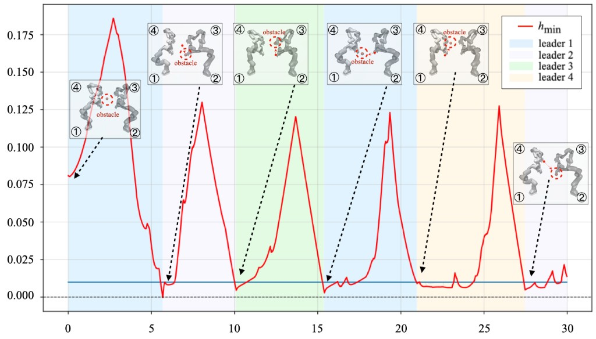
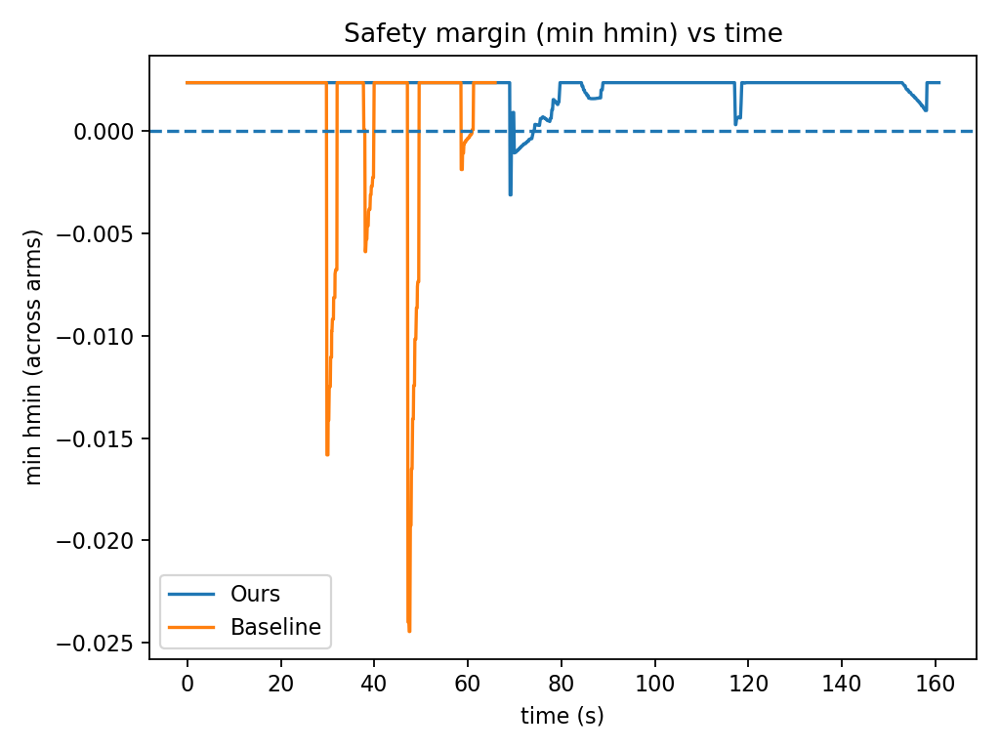
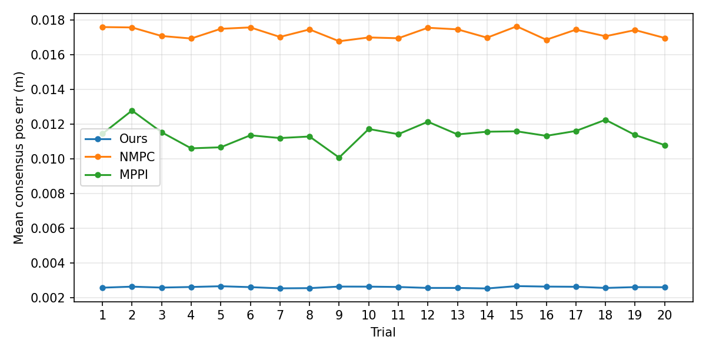
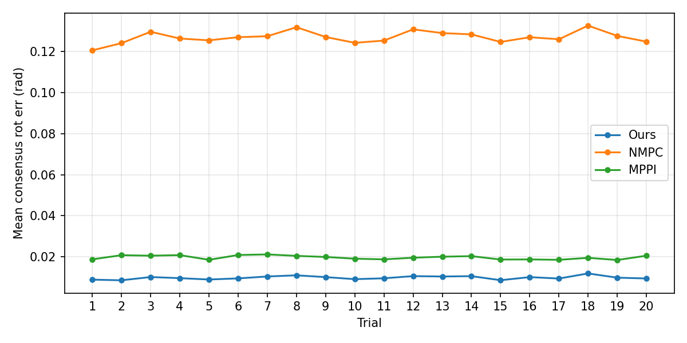
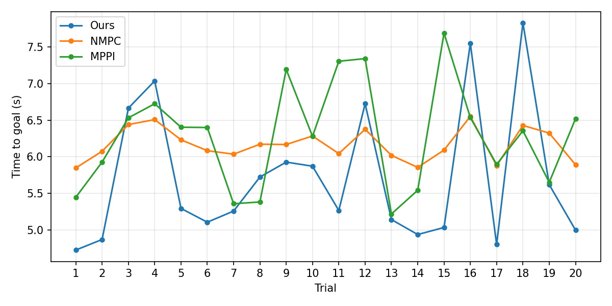
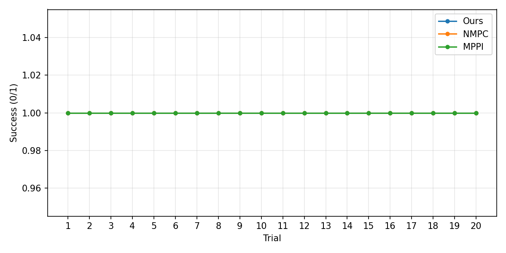

Abstract
Cooperative transport and manipulation of heavy or bulky payloads by multiple manipulators requires coordinated formation tracking, while simultaneously enforcing strict safety constraints in varying environments with limited communication and real-time computation budgets. This paper presents a distributed control framework that achieves consensus coordination with safety guarantees via hierarchical event-triggered control barrier functions (CBFs). We first develop a consensus-based protocol that relies solely on local neighbor information to enforce both translational and rotational consistency in task space. Building on this coordination layer, we propose a three-level hierarchical event-triggered safety architecture with CBFs, which is integrated with a risk-aware leader selection and smooth switching strategy to reduce online computation. The proposed approach is validated through real-world hardware experiments using two Franka manipulators operating with static obstacles, as well as comprehensive simulations demonstrating scalable multi-arm cooperation with dynamic obstacles. Results demonstrate higher precision cooperation under strict safety constraints, achieving substantially reduced computational cost and communication frequency compared to baseline methods.
Approach
Distributed Consensus Tracking
A fully distributed consensus-tracking protocol relies only on local neighbor information to enforce both translational and rotational consistency in task space. Feedback linearization converts the nonlinear manipulator dynamics into a task-space double integrator, enabling scalable cooperation under closed-chain coupling.
Hierarchical Event-Triggered Safety
A three-level event-triggered CBF architecture (environmental, inter-agent, and intrinsic local safety) with risk-aware leader selection and smooth switching activates safety constraints only when needed, reducing online QP computation and communication overhead under second-order dynamics and actuation limits.
Real-World & Simulation Validation
Validated on two Franka Emika Panda arms with static obstacles, and through extensive MuJoCo Monte Carlo studies and four-arm scenarios with dynamic obstacles, demonstrating scalability, robustness, and superior performance over baselines.
Multi-Arm Safety under a Dynamic Obstacle

In the four-arm scenario, a single dynamic spherical obstacle circles the formation, repeatedly shifting the risk among different arms and producing periodic drops in the minimum safety barrier $h_{\min}(t)$. The shaded regions indicate which arm is the active leader. The leader always rotates to the arm closest to the obstacle, so that $h_{\min}(t) > 0$ throughout the entire execution, guaranteeing collision-free cooperation.
Safety Margin vs. Baseline

The minimum safety margin (smallest $h$ across all arms) stays non-negative for our method, while the baseline repeatedly violates the safe set (negative excursions). The hierarchical event-triggered leader-switching strategy keeps the formation strictly inside the safe set.
Monte Carlo Evaluation (20 Trials)

Mean consensus position error per trial. Ours (blue) stays nearly an order of magnitude below NMPC and MPPI.

Mean consensus orientation error per trial across the compared methods.

Task completion time per trial. Ours achieves the shortest completion time in the majority of trials.

Per-trial success (safety compliance) across methods.
Four-Arm Quantitative Comparison
| Method | Safety | Time / step (ms) | $E_p$ | $E_{\theta}$ |
|---|---|---|---|---|
| Ours (HET-CBF) | ✓ | 3.06 ± 0.51 | 0.0080 ± 0.0092 | 0.030 ± 0.072 |
| D-CBF | ✓ | 3.32 ± 0.37 | 0.011 ± 0.0068 | 0.039 ± 0.086 |
| NMPC | ✗ | 42.03 ± 7.56 | 0.036 ± 0.014 | 0.13 ± 0.090 |
| MPPI | ✗ | 259.2 ± 13.90 | 0.010 ± 0.0092 | 0.047 ± 0.062 |
Only Ours and D-CBF satisfy safety constraints throughout the task. Ours attains the lowest per-step solve time and the best formation accuracy ($E_p$: position error, $E_{\theta}$: orientation error).
Video
BibTeX
@inproceedings{zhuang2026safe,
title = {Safe Consensus of Cooperative Manipulation with Hierarchical
Event-Triggered Control Barrier Functions},
author = {Zhuang, Simiao and Huang, Bingkun and Yang, Zewen},
booktitle = {},
year = {2026}
}